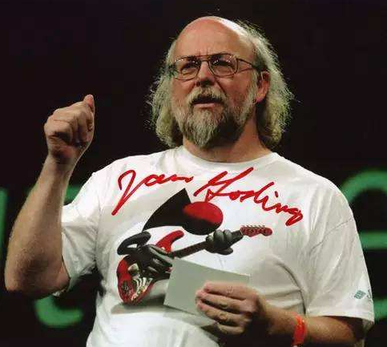

轻松时刻
- 概述：Java是一种面向对象的编程语言（Java底层是C++语言实现的），由Sun Microsystems公司于1995年推出。它是一种通用的、高级的、并发性强的、安全的、可移植的、解释性的、编译性的、动态的、跨平台的编程语言。Sun Microsystems公司于2010年1月被甲骨文（Oracle）公司以74亿美元的价格收购。甲骨文公司成为了Java语言的主要维护者和开发者之一。甲骨文公司官网地址：http://www.oracle.com
- Java之父：詹姆斯·高斯林（James Gosling），他是Java编程语言的发明者之一。高斯林在20世纪80年代末和90年代初，与Sun Microsystems公司的一些工程师一起开发了Java语言。高斯林出生于加拿大，1983年获得了卡尔加里大学的计算机科学博士学位。之后，他加入了Sun Microsystems公司，开始从事编程语言方面的研究工作。在Sun公司，他领导了一支团队，致力于开发一种新的编程语言，这就是后来的Java语言。Java语言的设计初衷是为了解决跨平台编程的问题。在Java语言的设计中，高斯林和他的团队引入了许多新的概念和技术，如虚拟机、垃圾回收、面向对象编程等，这些技术极大地改进了编程语言的性能和可用性。高斯林在Java语言的发明和推广过程中，发挥了非常重要的作用。他不仅是Java语言的设计者之一，而且还是Java社区的重要领袖和推动者。他一直致力于推广Java技术，帮助Java社区不断发展壮大。

- 起名字：Java 在叫“Java”之前，其实叫 Oak（橡树的意思，我感觉好像比 Java 好听一些）。怎么想到橡树的呢？James Gosling 坐在办公室，望向窗外，视野里出现了一颗橡树。不过，遗憾的是，Oak 已经被另外一家公司注册了，因此 1995 年 5 月 23 日，Oak 语言改名为 Java。Java 这名字并不是 James Gosling 的首选，也不是命名团队的首选。团队其他人员更青睐 Silk（丝绸），但 Gosling 不喜欢，他本人喜欢的是 Lyric（抒情诗），但没通过律师这一关。最后，排在第四位的“Java”脱颖而出。是不是像极了婴儿没生下来之前，家人就着急着起名的那种感觉，这个你觉得不行，那个他觉得不行，最后叫了“狗蛋”（😆）。James Gosling 回忆说，“Java”是一个叫 Mark Opperman 的人提议的，他是在一家咖啡店得到灵感的。奇妙的是，“Java”这个单词也是印度尼西亚爪哇岛的英文名，因生产咖啡而闻名，巧不巧？
- CAFEBABE：Java中
class文件的前四个字节为什么是 CAFEBABE? 是谁定义的?Java编程语言之父,詹姆斯•高斯林(James Gosling),曾这样说过:关于这一点,我很抱歉。我以前并不知道有 NeXT connection。这些有趣的十六进制数(HEX words)可能是匹配的来源. 至于在Java中使用CAFEBABE作为魔数的过程, 说起来有些曲折:我和小伙伴们经常去一个叫圣米歇尔巷(St Michael’s Alley)的地方吃午餐。根据当地传说, 在深暗的过去,感恩而死乐队(Grateful Dead)在出名前曾在此地表演. 这绝对是一个因 Grateful Dead Kinda Place 而闻名的地方。杰瑞(Jerry)去世时, 他们进行了祭奠.我们经常去那里, 称这个地方为 死亡咖啡(Cafe Dead)。可以看到,这是一个十六进制数. 那时候我正好需要维护一些文件的编码格式,需要用到两个魔数(magic numbers): 一个用于对象持久化文件, 另一个用于类文件. 于是我就用 CAFEDEAD 作为对象持久化文件的魔数, 当然,这两个魔数有着共同的前缀: 4个十六进制字符(CAFE, Java和咖啡有一段深沉的虐恋), 我选中了BABE(宝贝),于是不知道为什么洪荒之力就爆发了。当时, 这个魔数并没有什么特别的意义, 也看不出来有什么重要的, 或许很快就会消失在历史中。所以 CAFEBABE 成为 class 文件的魔数, CAFEDEAD 成为持久对象的魔数. 但没多久持久化对象(persistent object)技术真的消失了, 就如同魔数 CAFEDEAD 所蕴含的一样 —— 后来用的是RMI技术。
- 诞生故事：1992 年，Oak 的雏形有了，但项目组在向硬件生产商进行商演的时候，并没有获得认可，于是 Oak 就被搁置一旁了。1994 年，项目组发现 Java 更适合进行 Internet 编程。随后，项目组用 Oak 语言研发了一种能将小程序嵌入到网页中执行的技术——Applet。Applet 不仅能嵌入网页，还能够随同网页在网络上进行传输。不得不感慨一下，技术的更新迭代是真的快，Applet 拯救了 Oak，并使其蜕变成顶天立地的 Java，但 Applet 很早之前就被无情地拍死在了沙滩上。是不是很残酷？1995 年，Oak 被重新命名为“Java”，因为 Oak 被别的公司注册过了。新的名字最好能够表达出技术的本质：dynamic（动态的）、revolutionary（革命性的）、Silk（像丝绸一样柔软的）、Cool（炫酷的）等等。另外，名字一定要容易拼写，念起来也比较有趣。选来选去，项目组最后选择了“Java”，中文叫“爪哇”。细心的小伙伴可能会发现，Java 这个单词里有一个敏感词，所以有段时间微信（文章专辑名这块）为了禁敏感词，竟然把 Java 都禁了，我当时就只能用爪哇来代替 Java，手动狗头。“Java”是印度尼西亚爪哇岛的英文名，因生产咖啡而闻名，所以，小伙伴也看到了，Java 这个单词经常和一杯冒着热气的咖啡一起出现。